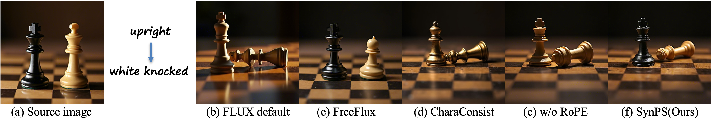
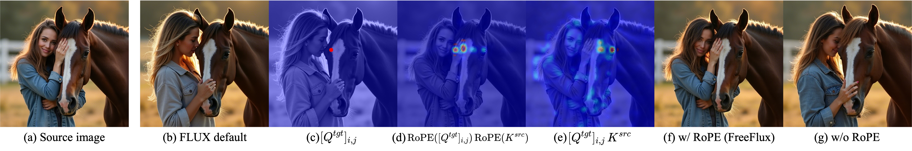
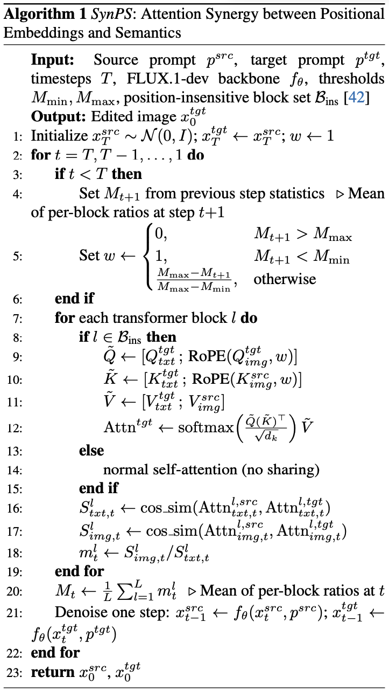
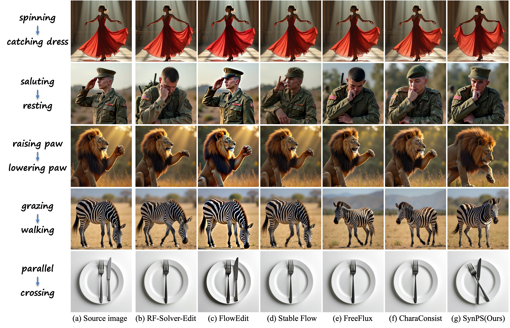
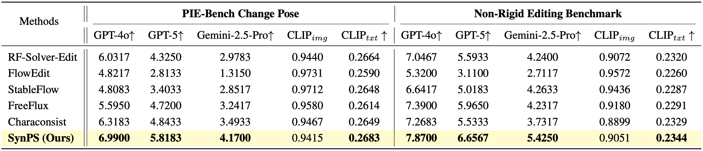
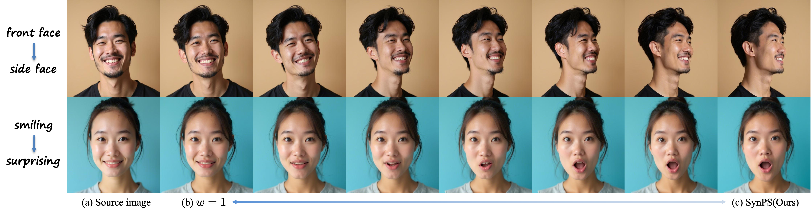

Training-free image editing with large diffusion models has become practical, yet faithfully performing complex non-rigid edits (e.g., pose or shape changes) remains highly challenging. We identify a key underlying cause: attention collapse in existing attention sharing mechanisms, where either positional embeddings or semantic features dominate visual content retrieval, leading to over-editing or under-editing.
To address this issue, we introduce SynPS, a method that Synergistically leverages Positional embeddings and Semantic information for faithful non-rigid image editing. We first propose an editing measurement that quantifies the required editing magnitude at each denoising step. Based on this measurement, we design an attention synergy pipeline that dynamically modulates the influence of positional embeddings, enabling SynPS to balance semantic modifications and fidelity preservation.
By adaptively integrating positional and semantic cues, SynPS effectively avoids both over- and under-editing. Extensive experiments on public and newly curated benchmarks demonstrate the superior performance and faithfulness of our approach.
Intuitively, applying attention sharing indiscriminately across all layers and denoising steps inevitably leads to duplication issues dominated by the source image.
Existing methods [1, 2] have investigated the use of fixed attention blocks for attention sharing. However, such issues still persist in the edited results due to emphasis on positional embeddings. Meanwhile, [3] adjusts position embeddings based on the correspondence between the source image and the pre-generated target image, where the structure is determined by the target prompt. This often leads to cases where the source information is entirely neglected due to the reliance on target semantics. This motivates us to investigate the balance between the positional signals of the source and semantics from the target prompt in the attention sharing process.

Figure 2: Qualitative comparison on the editing instruction "upright → white knocked". (b) Initialized with the same noise as the source image, the target image is generated using FLUX with default settings conditioned on the target prompt, thereby fully following the textual instruction. (c) FreeFlux produces noticeable duplicate artifacts and fails to achieve the intended edit. (d) and (e) show the results of CharaConsist and attention sharing w/o RoPE, respectively. Although the overall structure follows the target prompt, the source color and texture are not well preserved (i.e., dominated by the prompt), due to the inaccurate correspondences in CharaConsist and semantic confusion in the w/o RoPE setting. (f) Our method better preserves the source appearance while faithfully following the target prompt.

Figure 3: Analysis of attention maps w/ and w/o RoPE during attention sharing. (a) The source image is generated from the prompt "a woman is hugging a horse." (b) The target image is generated from "a woman is fondling a horse." using the default FLUX settings. (c) We select a query vector [Qimg]i,j at position (i,j) in the target image. (d) and (e) show the attention maps computed between this query vector and the source image, serving as the key. For clarity, we omit the subscript “img” in the figure and use RoPE(·) instead of RoPE(·,i,j) as a simplified notation. In (d), with RoPE injected, attention is localized to spatially adjacent regions. In (e), without RoPE, attention correctly identifies semantically corresponding regions. (f) and (g) show the target images generated using attention sharing w/ and w/o RoPE, respectively.
Attention Analysis. Figure 3 (d) reveals that positional embeddings (PE) cause attention collapse, forcing queries to focus on spatially adjacent rather than semantically relevant regions, leading to duplication artifacts. While removing PE enables correct semantic matching across the image (Figure 3 (e)), naively doing so causes new artifacts, such as attribute bleeding (e.g., incorrect color transfer) and prompt-dominated semantic collapse (Figure 2). Consequently, since editing needs vary, we propose a prompt-adaptive attention sharing mechanism to dynamically modulate the synergy between PE and semantics, replacing fixed strategies.
To tackle the challenge of determining when and how to apply positional embeddings effectively, we propose the SynPS method, which modulates Synergy between Positional embedding and Semantics in Attention for complex non-rigid image editing.

To determine when to apply positional embeddings, we introduce a metric to quantify the editing magnitude. We compute the cosine similarity between the source and target attention outputs for both text tokens (Sltxt,t) and image tokens (Slimg,t) at each block l and timestep t. Sltxt,t inversely reflects the desired semantic change, while Slimg,t measures the current visual alignment. We define the overall editing measurement Mt as the average ratio of these similarities across L blocks:
\[ M_t = \frac{1}{L}\sum_{l=1}^{L}\frac{S^{l}_{img,t}}{S^{l}_{txt,t}}. \]
Intuitively, when this ratio is large, the generated target image might diverge too much from the textual instruction, indicating under-editing, while a small ratio implies over-editing of unfaithful fidelity to the source image.
Then, we propose an attention synergy pipeline that dynamically adjusts the effect of position embeddings according to the stepwise editing measurement. We exploit the property of RoPE, which encodes relative displacement between tokens. We introduce a scaling factor w ∈ [0, 1] applied to the position IDs of query and key tokens, effectively scaling the rotation angles and the relative distance. This creates a continuous spectrum of control: w=1 preserves full positional constraints to prevent deformation, while w=0 renders attention position-agnostic to allow semantic changes.
The weight w is adaptively determined by the editing measurement Mt+1 via a piecewise linear function:
\[ w= \begin{cases} 0, & \text{if } M_{t+1} > M_{\max},\\ 1, & \text{if } M_{t+1} < M_{\min},\\ \dfrac{M_{\max}-M_{t+1}}{M_{\max}-M_{\min}}, & \text{otherwise.} \end{cases} \]
Specifically, when Mt+1 is high (indicating under-editing), we relax positional constraints (w → 0) to facilitate semantic adherence; conversely, when Mt+1 is low, we enforce structure (w → 1) to avoid over-editing.
We compare SynPS with state-of-the-art training-free methods including RF-Solver-Edit, FlowEdit, StableFlow, FreeFlux, and CharaConsist.

Figure 4: Qualitative comparison with state-of-the-art methods.

Table 1: Quantitative comparison with state-of-the-art methods.

Figure 5: Intermediate results during the interpolation of the attention sharing weight w between 1 and our SynPS weights. As w decreases from 1 to our weights, the target image gradually stops replicating the structure of the source image, while still preserving its semantic features and adhering to the prompt guidance.
@article{chen2025synps,
title={The Devil is in Attention Sharing: Improving Complex Non-rigid Image Editing Faithfulness via Attention Synergy},
author={Chen, Zhuo and Wei, Fanyue and Xu, Runze and Li, Jingjing and Duan, Lixin and Yao, Angela and Li, Wen},
journal={arXiv preprint arXiv:2512.14423},
year={2025}
}